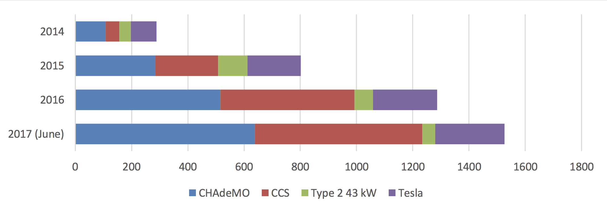

Suomen latauskartta näyttää, että pikalatauspisteiden kattavuus pääteiden varrella alkaa olla jo aika hyvä. Lähinnä valkeita alueita on vielä itäisessä Suomessa.
Asiointilatauspisteen laittaminen pystyyn on melko yksinkertaista ja vaatii lähinnä sähkömiehen käynnin. Kun sähköautot yleistyvät, myös asiointilatausta alkaa saada liki kaikkialta. Pikalatauspisteitäkin pystytään asentamaan hyvin nopealla tahdilla. Alla olevassa kuvassa näet, miten latausasemien määrä on kehittynyt Norjassa, hyvin samaa tahtia sähköautojen määrän kanssa.
Lähde